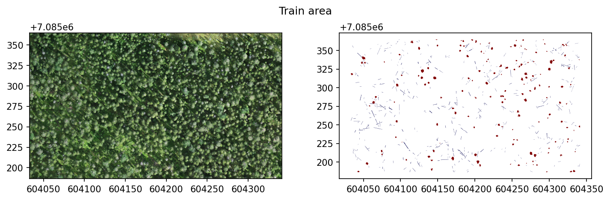
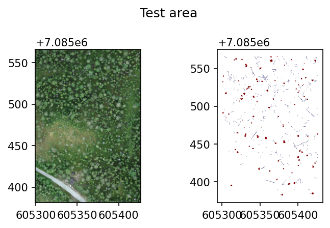

import rasterio as rio
import geopandas as gpd
from pathlib import Path
import rasterio.plot as rioplot
import matplotlib.pyplot as pltCOCO workflow
Example workflow for creating a COCO-style dataset and training an object detection model with
detectron2
path_to_data = Path('workflow_examples/')
train_raster = path_to_data/'104_28_Hiidenportti_Chunk1_orto.tif'
train_shp = path_to_data/'104_28_Hiidenportti_Chunk1_orto.geojson'
test_raster = path_to_data/'104_42_Hiidenportti_Chunk5_orto.tif'
test_shp = path_to_data/'104_42_Hiidenportti_Chunk5_orto.geojson'Example data is RGB UAV imagery from Hiidenportti, and the task is to detect and segment different deadwood types. The reference data are annotated as polygons, and target column is layer.
Training area looks like this.
fig, axs = plt.subplots(1,2, dpi=150, figsize=(10,3))
with rio.open(train_raster) as src:
rioplot.show(src, ax=axs[0])
train_gdf = gpd.read_file(train_shp)
train_gdf.plot(column='layer', ax=axs[1], cmap='seismic')
plt.suptitle('Train area')
plt.tight_layout()
plt.show()
And test area looks like this.
fig, axs = plt.subplots(1,2, dpi=150, figsize=(5,3))
with rio.open(test_raster) as src:
rioplot.show(src, ax=axs[0])
test_gdf = gpd.read_file(test_shp)
test_gdf.plot(column='layer', ax=axs[1], cmap='seismic')
plt.suptitle('Test area')
plt.tight_layout()
plt.show()
Install required dependencies
In order to install detectron2, follow the instructions provided here.
Create COCO-format dataset
In this example, the data are split into 256x256 pixel tiles with no overlap. Also set the min_bbox_area to 8 pixels so too small objects are discarded.
CLI
geo2ml_create_coco_dataset \
example_data/workflow_examples/104_28_Hiidenportti_Chunk1_orto.tif \
example_data/workflow_examples/104_28_Hiidenportti_Chunk1_orto.geojson layer \
example_data/workflow_examples/coco/train example_train \
--gridsize_x 256 --gridsize_y 256 \
--ann_format polygon --min_bbox_area 8
geo2ml_create_coco_dataset \
example_data/workflow_examples/104_42_Hiidenportti_Chunk5_orto.tif \
example_data/workflow_examples/104_42_Hiidenportti_Chunk5_orto.geojson layer \
example_data/workflow_examples/coco/test example_test \
--gridsize_x 256 --gridsize_y 256 \
--ann_format polygon --min_bbox_area 8Python
from geo2ml.scripts.data import create_coco_datasetoutpath = path_to_data/'coco'
create_coco_dataset(raster_path=train_raster, polygon_path=train_shp, target_column='layer',
outpath=outpath/'train', save_grid=False, dataset_name='example_train',
gridsize_x=320, gridsize_y=320, ann_format='polygon', min_bbox_area=8)
create_coco_dataset(raster_path=test_raster, polygon_path=test_shp, target_column='layer',
outpath=outpath/'test', save_grid=False, dataset_name='example_test',
gridsize_x=320, gridsize_y=320, ann_format='polygon', min_bbox_area=8)Under the hood, this command does the following:
- Tiles the raster
Dataset structure
Above creates the dataset to path_to_data/'yolo', so that it contains folders train and test. Both of these folders contain
- folder
images, which contains the tiled raster patches - folder
vectors, which contain geojson-files corresponding to each file inimages, if the location contains any annotations - file
coco_polygon.json, which is the annotation file and info for the dataset
Train the model
from detectron2 import model_zoo
from detectron2.config import get_cfg
from detectron2.data.datasets import register_coco_instances
from detectron2.engine import DefaultTrainer
from detectron2.evaluation import COCOEvaluator, DatasetEvaluators
import osFirst we need to register the datasets:
register_coco_instances(name='example_train', # the name that identifies a dataset for this session
metadata={}, # extra metadata, can be left as an empty dict
json_file=outpath/'train/coco_polygon.json', # Annotation file
image_root=outpath/'train/images/') # directory which contains all the images
register_coco_instances('example_test', {}, outpath/'test/coco_polygon.json', outpath/'test/images')And then modify the config file.
cfg = get_cfg()
cfg.merge_from_file(model_zoo.get_config_file("COCO-InstanceSegmentation/mask_rcnn_R_50_FPN_3x.yaml"))
cfg.DATASETS.TRAIN = ("example_train",)
cfg.DATASETS.TEST = ("example_test",)
cfg.DATALOADER.NUM_WORKERS = 4
cfg.MODEL.WEIGHTS = model_zoo.get_checkpoint_url("COCO-InstanceSegmentation/mask_rcnn_R_50_FPN_3x.yaml") # Let training initialize from model zoo
cfg.SOLVER.IMS_PER_BATCH = 4
cfg.TEST.EVAL_PERIOD = 100
cfg.OUTPUT_DIR = str(outpath/'runs')
cfg.SOLVER.MAX_ITER = 1000
cfg.MODEL.ROI_HEADS.NUM_CLASSES
os.makedirs(cfg.OUTPUT_DIR, exist_ok=True)Next create a trainer. Here we use DefaultTrainer because of demo purposes.
trainer = DefaultTrainer(cfg)First the trainer must resume_or_load the checkpoint.
trainer.resume_or_load(resume=False)Then it can be trained:
trainer.train()For evaluation we need to build an evaluator to like the following:
results = trainer.test(cfg, trainer.model,
evaluators=DatasetEvaluators([COCOEvaluator('example_test',
output_dir=cfg.OUTPUT_DIR)]))Results are returned as OrderedDict:
resultsOrderedDict([('bbox',
{'AP': 33.44880540699818,
'AP50': 59.77458622455857,
'AP75': 35.438983935163215,
'APs': 31.02145641125612,
'APm': 29.87210764413265,
'APl': nan,
'AP-groundwood': 29.446534023953113,
'AP-uprightwood': 37.45107679004325}),
('segm',
{'AP': 29.43588172775907,
'AP50': 58.826433296379776,
'AP75': 25.0488194053204,
'APs': 23.09816613815339,
'APm': 36.8700686662939,
'APl': nan,
'AP-groundwood': 22.00613746224115,
'AP-uprightwood': 36.86562599327699})])Other libraries
MMDetection is another commonly used library for object detection from COCO formatted datasets. According to these instructions, below should work:
# the new config inherits the base configs to highlight the necessary modification
_base_ = './cascade_mask_rcnn_r50_fpn_1x_coco.py
# 1. dataset settings
dataset_type = 'CocoDataset'
classes = ('Standing', 'Fallen')
data_root = /workflow_examples/coco/'
train_dataloader = dict(
batch_size=2,
num_workers=2,
dataset=dict(
type=dataset_type,
metainfo=dict(classes=classes),
data_root=data_root,
ann_file='train/coco_polygon.json',
data_prefix=dict(img='train/images')
)
)
...